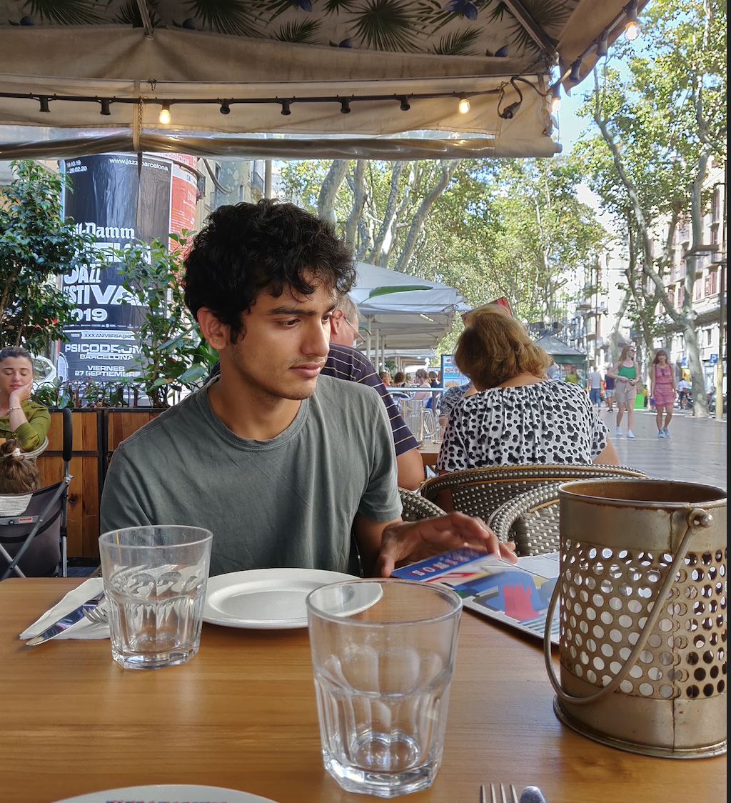

Prateek Malhotra
- Email: prateekmalhotra [at] ucla [dot] edu
- Vitals: CV/Resume
- Twitter: @prateek_dbst
- Github: prateekm08
- LinkedIn: prateekmalhotra
About
I work as a Machine Learning Scientist at Alectio. I lead the auto-labeling team where our goal is to reduce costs associated with the data collection process. Identification of noisy and redundant data points, deep unsupervised clustering, and pseudo-labeling are some problems I directly tackle everyday. Prior to this, I completed my MS in Computer Science at UCLA, advised by Professor Miryung Kim.
My research goal is to create robust methods which can learn with very little information. Methods that require less data by extracting more information from the already available labeled data and algorithms which work for a variety of datasets without the need for excessive fine-tuning are of the greatest interest to me. In my free time, I enjoy reading, antique shopping, and meeting new people!